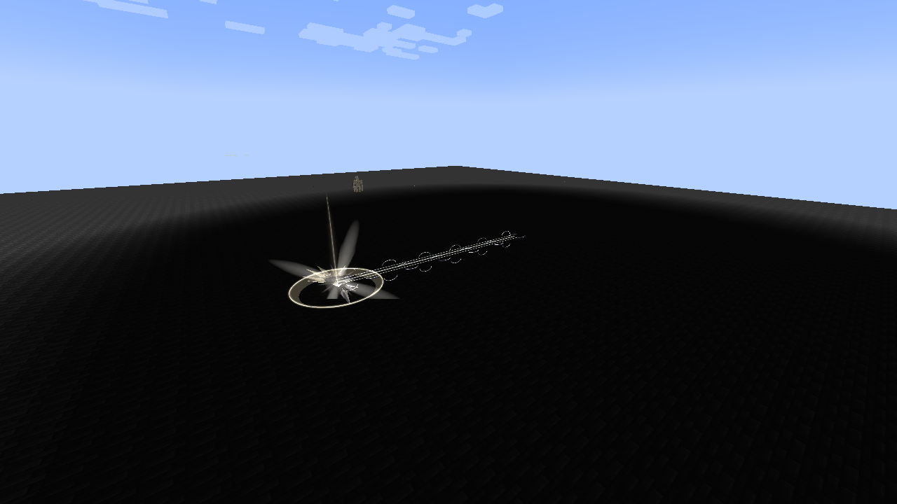

Chained is an original interpretation inspired by Heavenly Restriction in Jujutsu Kaisen, implemented as the race-exclusive Unique Skill of the Heavenly Restriction lineage. Its binding pact exchanges magical growth and unrestricted skill acquisition for exceptional aura capacity, Battlewill training and physical combat. The true passive follows ownership; the combat bonuses use Tensura’s normal skill toggle.
Contents
Usage
Heavenly Restriction
[Passive - True] — Heavenly Restriction
| Ability information | Value |
|---|---|
| Damage type | None |
| Damage ID | None |
| Activation | Owning the learned skill; independent of toggle and slots |
Chained trades magical growth and unrestricted skill learning for much greater aura capacity. These effects always apply while you own it:
- 5× aura growth: later maximum-aura gains are multiplied by five. Your starting aura is not multiplied.
- No maximum-magicule gains: keep your existing capacity, but it cannot increase. Current magicules remain usable; costs and losses still apply.
- Regeneration conversion: natural magicule regeneration restores aura instead, even when your magicules are full.
- Restricted learning: you can gain Battlewills, resistances/nullifications, reincarnation-granted skills and their derived skills, and the lineage’s aura-recovery skills. Skills you already own are retained.
- Aura-paid resistances: acquiring resistances or nullifications spends the configured cost in current aura instead of permanent magicule capacity. Free grants stay free.
For example, reincarnating with Martial Master still lets you gain Heavenly Eye. Myths synthesis and Godly ascension are also allowed when every ingredient comes from your recorded reincarnation skills.
A fresh Fettered Human starts with 1,500–2,000 aura and 50–100 magicules: 1,550–2,100 EP, before other reincarnation rewards. With no other modifiers, maximum aura is starting aura + 5 × later gains. This increases capacity, not your current aura balance.
EP growth splits 90% aura / 10% magicules; Chained blocks the magicule share without redirecting it. Its bonus aura counts toward total EP in Status and evolution requirements. Native limits still apply. Secondary-race growth bonuses preserve this split; Convergent races use their own profiles.
Martial Supremacy
[Passive - Toggle] — Martial Supremacy
| Ability information | Value |
|---|---|
| Damage type | None directly; strengthens native Battlewill damage |
| Damage ID | None |
| Resource cost | None |
Enable Chained through Tensura’s normal Ability Selection toggle to gain:
| Effect | Bonus |
|---|---|
| Battlewill learning points | +9 |
| Battlewill mastery points | +9 |
| Resistance/Nullification learning points | +19 |
| Battlewill damage | 5× |
| Numeric Battlewill buff effectiveness | 3× |
| Attack-damage attribute | 3× |
Numeric buffs include native attribute bonuses, such as Diamond Path’s armor, and additional damage supplied by a Battlewill buff, such as Aura Sword. The bonus changes their numeric strength; buff duration, learning costs and resource-conversion rates keep their native values. Repeated refreshes do not multiply an already boosted buff again. Disabling Chained restores each tracked buff’s native amount.
Battlewill-enhanced melee can benefit from both the tripled attack attribute and the Battlewill multiplier. Ordinary melee without a Battlewill component receives the attack-attribute bonus. Native defenses, damage calculation and allowed inherited skills can further affect the result.
Broken Limit
[Passive - True - Mastered] — Broken Limit
| Ability information | Value |
|---|---|
| Damage type | None directly |
| Damage ID | None |
| Requirement | Chained mastered and owned; independent of toggle and slots |
Your own hits lower defensive skills by one tier: Resistance → no resistance, Nullification → Resistance. Numeric resistance attributes are bypassed for those hits. Attributable status effects use the corresponding lower-tier immunity rules. The target’s learned skills are retained. Native barriers, authority and other defenses continue to apply.
Your damage sources also ignore dodge, including projectiles attributed to you. Broken Limit is always active while you own mastered Chained, even with Chained toggled off and unequipped. Forgetting Chained removes it. Martial Supremacy’s damage/training bonuses still require the toggle.
Unerring Body
[Passive - In-slot] — Unerring Body
| Ability information | Value |
|---|---|
| Damage type | None |
| Damage ID | None |
| Requirement | Chained equipped in the active ability preset |
Gain 100% dodge chance against projectiles and 25% against other incoming damage. The latter includes non-projectile magic and environmental hits. This passive works with Chained’s combat toggle off. Explicit source-level dodge bypass and operator/void-style invulnerability bypass still take priority; another mastered, enabled Chained owner can bypass it.
Severance Rush
[Active - Press] — Severance Rush
| Ability information | Value |
|---|---|
| Damage type | Aura slash / Battlewill |
| Damage ID | tensura:aura_slash |
| Resource cost | 2% of current aura, paid once |
| Cooldown | None |
| Movement | Instant teleport up to 16 blocks along your look direction |
| Path damage radius | 3 blocks |
| Arrival damage radius | 4 blocks |
Teleport instantly along your aim, like Martial Master’s movement art. The same activation resolves one hit along the route and an additional hit at the destination. A victim caught in both receives both hits, including inside the ordinary hurt cooldown. Each victim receives at most one path hit and one arrival hit.
The endpoint stops before solid body collisions, unloaded terrain, the world border or the build-height boundary. Looking upward or downward changes the teleport direction. If there is no usable movement or no aura, the cast spends no aura. The teleport is not a timed channel or a movement-over-time attack. There is no skill cooldown; each successive press spends 2% of the aura remaining at that moment.
Let A be the aura actually paid:
- A = 0.02 × current aura.
- Path damage = 1.5 × √A.
- Arrival damage = 3 × √A.
At 100,000 current aura, the cast pays 2,000 aura and has about 67.08 path damage plus 134.16 arrival damage before native handling. With Martial Supremacy enabled, those become about 335.41 and 670.82. The formula uses actual aura spent, with no extra EP multiplier or mastery damage multiplier.
A brief chain separates into broken links along the route, with a pale pressure burst at arrival. The trail remains visible after the instantaneous teleport; it does not move the player over its lifetime.

Obtaining and evolution
Select Fettered Human in the native reincarnation race menu. Only Fettered Human grants Chained. Normal evolution retains the existing skill and its mastery, but later stages do not grant or regrant it. Selecting a later stage directly does not award Chained. The lineage proceeds through four native-menu evolutions to Heavenbreaker. Chained is separate from the ordinary reincarnation Unique roll.
Existing saves and recorded inheritance
Automatic inheritance tracking starts with version 0.32.0, including reincarnation rolls made before the player chooses this race. Previously owned skills are retained. The addon cannot infer the original source of every historical skill grant in an older save.
An operator can certify a known, already-owned reincarnation root with:
/myths chained inherit <player> <skill_id>
For example: /myths chained inherit PlayerName tensura:martial_master. This requires permission level 2 and does not grant the named skill. Future native derived grants can then inherit its exemption.